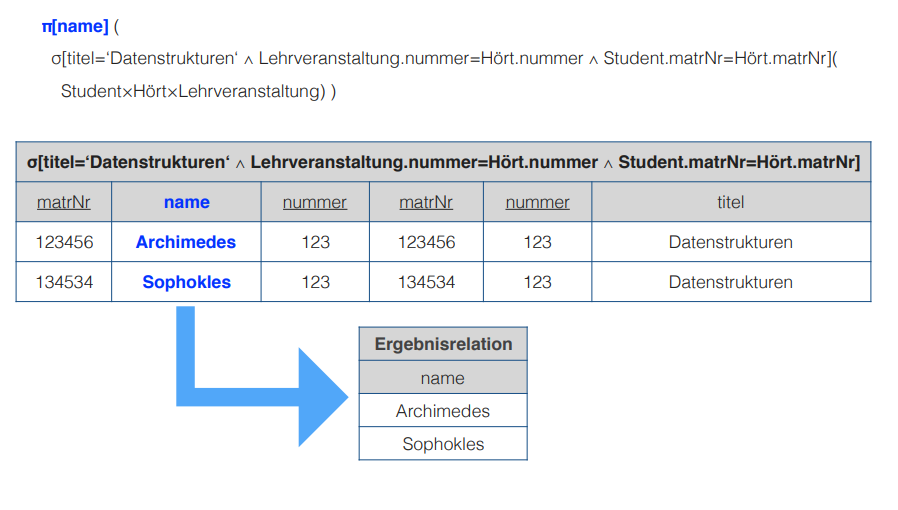

Well, to be honest I would have expected that we cover the physical design phase of our database design cycle in this lecture. Turns out we didn't. Did we? I don't know :D ! It seems that lecturers tend to provide some course outline which they then don't (explicitly) follow how you would expect it.
So in this lecture it was all about relational algebra, which I think can be associated to the logical design phase (remember that the RM relational model was the central topic there), so yeah there's that :D.
(╯°□°)╯︵ ┻━┻
Nevermind let's go!
By the way put that table down
┬─┬ノ( º _ ºノ)
Good…
Relational Algebra - Fundamental Operations
Remember from here (lecture 2) that a data model consists of a structural part, an operatoinal part and integrity rules. Relational algebra which we'll deal with in this lecture belongs to the operational part, which describes permitted operations on the data and their outcome.
Relational algebra is a formal language with the purpose of extracting information/data out of relations.
A relational expression (relationaler Ausdruck) derives a new relation out of existing or constant base relation(s) (Basisrelation) via a relational operation. There are different relational operations/operators (there are more than those listed below):
- unary operations: selection, projection, rename
- binary operations: join (Vereinigung), (set) difference (Differenz), cartesian product (Kreuzprodukt)
A set has closure (Abgeschlossenheit) under an operation if performance of that operation on members of the set always produces a member of the same set; in this case we also say that the set is closed under the operation. In case of relational algebra a operation always creates another relation.
The consequence of closure is that we are able to continue doing operations with the result of an operation ("weiterrechnen"). If X and Y are relational expressions (base expressions (relations) or compound expressions (resulting relations)?) then X ∪ Y, X-Y, X×Y, σP(X), πA(X) and \roh(X) are also relational expressions/propositions (relationale Ausdrücke). To specify the evaluation order of relational terms, they may be put into parentheses.
Slides: We won't look at operations to define/change relations (now or for ever ?:D dunno)
Selection
A selection is visualized as σP(R) . That fancy little greek letter σ you see there is called sigma. It in fact is a small sigma (the big sigma is the sum sign!). So to perform a selection we first need \(R\). \(R\) is a relation. And the subscript parameter \(P\) is a predicate (logical proposition/expression which refers to attributes of \(R\)). The result of such selection operation is a relation with the same relation schema as \(R\) which holds all tuples from R that fulfill the criteria of the predicate \(P\) (predicate is like a condition/selection criteria).
The degree of the resulting relation σP(R) is equal to the degree of R: \(deg(\sigma_P(R)) = deg(R)\). What is the degree you ask? We had this in lecture 3 my friend but I'll copy it from there: "the degree of a relation R describes the amount of attributes resp involved domains" (Also from wikipedia: The number of attributes constituting a heading is called the degree, which term also applies to tuples and relations. The term n-tuple refers to a tuple of degree n (n ≥ 0).)
The cardinality of the resulting relation σP(R) is smaller or equal to the cardinality of R: \(|\sigma_P(R)| \leq |(R)|\). What is the cardinality you also ask? Well my friend we also had this in lecture 3, but you're lucky that I'm such a nice fellow copy-and-pasterer :D: "the cardinality of a relation R describes the amount of tuples (rows/elements) in R"
Okay suppose we have the following relation R:
| a | b | c | d | e |
|---|---|---|---|---|
| 1 | a1 | 45 | xx | 5 |
| 2 | a1 | 23 | xx | 5 |
| 3 | a2 | 13 | xx | 5 |
| 4 | b1 | 99 | xx | 7 |
| 5 | b1 | 10 | xx | 7 |
Now let's do some selections:
- σe=5(R)
| a | b | c | d | e |
|---|---|---|---|---|
| 1 | a1 | 45 | xx | 5 |
| 2 | a1 | 23 | xx | 5 |
| 3 | a2 | 13 | xx | 5 |
- σc>40∧e<7(R)
| a | b | c | d | e |
|---|---|---|---|---|
| 1 | a1 | 45 | xx | 5 |
- σb='a3'(R)
| a | b | c | d | e |
As you can see the degree is always the same (5) while the cardinality varies (3, 1, 0).
Projection
A projection is visualized as πA(R). I think everybody knows this greek letter π it is called pi for those who don't. So to perform a projection we first need \(R\). \(R\) is a relation. And the subscript parameter \(A\) is an attribute set (Attributmenge) that solely holds attributes of R. The result of such projection operation is:
- a relation of all tuples from R, the schema of the resulting relation solely consists of the attributes of A (all tuples but just the specified attributes)
- if A does not contain key attributes (to identify uniquely) the amount of tuples will be reduced because duplicates won't be included
The degree of the resulting relation πA(R) is smaller or equal to the degree of R: \(deg(\pi_A(R)) \leq deg(R)\).
The cardinality of the resulting relation πA(R) is smaller or equal to the cardinality of R if key attributes aren't included: \(|\pi_A(R)| \leq |(R)|\). When key attributes are kept via A then the cardinality of πA(R) is equal to the cardinality of R: \(|\pi_A(R)| = |(R)|\).
Okay again suppose we have the following relation R:
| a | b | c | d | e |
|---|---|---|---|---|
| 1 | a1 | 45 | xx | 5 |
| 2 | a1 | 23 | xx | 5 |
| 3 | a2 | 13 | xx | 5 |
| 4 | b1 | 99 | xx | 7 |
| 5 | b1 | 10 | xx | 7 |
Now let's do some projections:
- π{a,b,c}(R)
| a | b | c |
|---|---|---|
| 1 | a1 | 45 |
| 2 | a1 | 23 |
| 3 | a2 | 13 |
| 4 | b1 | 99 |
| 5 | b1 | 10 |
- π{b,e}(R)
| b | e |
|---|---|
| a1 | 5 |
| a2 | 5 |
| b1 | 7 |
- π{d}(R)
| d |
|---|
| xxx |
So notice that projection gives us unique attribute combinations.
Rename
A rename is a unary operation (one relation) denoted with this \roh which is callled "roh". It can be used to:
- rename a relation: \rohS(R) = R is renamed to S
- rename an attribute: \rohb ← a(R) = attribute a is renamed to b (of relation R)
- rename all attributes: \roh(x,y,z,..)(R) = all attributes of R are renamed to the names in parens, this case x, y and z
- combined renaming: \rohS(a,b,c)(R) = relation R is renamed to S and all its attributes are renamed to a, b, c
Example of rename operation:
Join
To perform a join we need two relations R and S with the same schema (same attribute domains). The attributes of R and S can be named differently though as long as they have the same domain (and of course semantic). A join is visualized like \(R \cup S\). In set theory "∪" denotes the union.
The result of a join is a relation with the schema of R (same as S) with all tuples from R and S. If there are identical tuples in R and S those duplicates are eliminated.
The degree of the resulting relation R ∪ S is equal to the degree of R: \(deg(R \cup S) = deg(R) = deg(S)\).
The cardinality of the resulting relation R ∪ S is equal to the cardinality of R plus the cardinality of S if there are no duplicate tuples → \(|R \cup S| = |R| + |S|\). However if there are duplicate tuples then the cardinality of R ∪ S is smaller: \(|R \cup S| < |R| + |S|\).
Example join operation without duplicates:
Example join operation with duplicates:
Difference
To perform a set difference we need two relations R and S with the same schema (same attribute domains). The attributes of R and S can be named differently though as long as they have the same domain (and of course semantic). A set difference is visualized like \(R - S\). The result of a set difference operation are the tuples, which are present in R but are not in the second relation S.
The degree of \(deg(R-S)\) is equal to \(deg(R)\).
If there is no overlap between the cardinality of R-S is equal to the cardinality of R: \(|R-S| = |R|\). Think about this makes sense because nothing from R is removed if it not in S. But usually there's some overlap so the cardinality is \(|R-S| < |R|\).
Example set difference with overlap:
Example set difference without overlap:
Cartesian Product
The cartesian product (Kreuzprodukt) is also a binary operation which means that it acts on two relations R and S. In contrast to the operations we looked at so far, the cartesian product does not require the relations to have the same schema. The cartesian product operation is denoted as \(R × S\).
The resulting relation of a cartesian product operation has a schema consisting of the schema of R and S. The tuple set of the resulting relation is a set of every possible combination of tuples from R and S.
The degree is \(deg(R × S) = deg(R) + deg(S)\) and the cardinality \(|R × S| = |R| * |S|\).
Beware that because of the combination of all tuples the resulting relation can get quite big.
Example of a cartesian product operation:
Extending the Notation
It is a somewhat common use case that two relations need to be combined (via cartesian product) and those relations have attributes with the same name in their schema which we need to distinguish after performing the cartesian product operation.
To do so and to avoid cumbersome rename operations we prefix identically named attributes with their origin relation name and a dot ".".
An example of attribue qualification:
This should however be used for temporary relation requests only. If it is planned to continue using the resulting/product relation (Produktrelation) we should qualify the attribute names distinctively via explicit renaming.
A practicle example request en detail
Take the following Entity-Relationship Model(UML) and the derived Relational Model:
So, we want to know which lectures the student with matricle number 134534 attended. To find out we will first formulate the query/request in relational algebra:
\[ \pi[titel](\sigma[matrNr=134534 \wedge Lehrveranstaltung.nummer=Hört.Nummer](Lehrveranstaltung × Hört)) \]
↑ Notice that to improve readability we can put the subscript parameters and subscript attributes in brackets instead
Now let's take a detailed look at the individual steps of what really happens here:
First we create a new (temporary) relation via the cartesian product:
Then we select all tuples where the Lehrveranstaltung.nummer(lecture number) matches the Hört.nummer (hears number). This is crucial because the cartesian product operation combines all tuples and we kind of want to "filter" to where the original tuples match (think about what is done here and why! it is important)
and of those we select the tuple(s) where the matrNr is what we search for (134534)
The following image shows the resulting relation of which we then project the attribute that we are interested in (title) to get to our final result relation:
Another Example
Take a look at this new (similar to the previous but different!) model:
Now we want to know the names of the students that attend the lecture "Datenstrukturen".
This is the according relational algebra formula: \[ \pi[name](\sigma[titel='Datenstrukturen' \wedge Lehrveranstaltung.nummer=Hört.Nummer \wedge Student.matrNr=Hört.matrNr](Student × Lehrveranstaltung × Hört)) \]
First the cartesian product of the three relations:
Then the selection which is again really crucial (!!!):
And finally the projection to select the attribute of interest 'name':

Relational Algebra - Extending the Fundamental Operations
The six operations (selection, projection, join, difference, cartesian product) that we covered in the previous sections are the fundamental/base operations (Basisoperationen) of relational algebra.
Now we'll introduce more operations that are for commonly used functionality. All of these are however expressable via the fundamental/base operations as well.
Theta-Join
When we perform the cartesian product operation we almost always perform a corresponding selection with it (/afterwards) because all tuples are combined but we only want those which match on a certain attribue. The motivation behind a Theta-Join is to combine these two steps into one logical operation.
A theta join is visualized with a bowtie ⋈ and a theta θ. The θ represents a predicate similar to the predicate P in a selection (selection criteria). A theta-join between to relations R and S would look like this R ⋈θ S.
This shows the equivalence of a theta-join to a cartesian product and selection operation: R ⋈θ S = σθ(R × S)
By the way when the predicate θ only holds equality operators/assignments/conditions the term equi-join is used for this operation.
The degree of a relation resulting from a theta join is equal to the degree of both relations that are joined: \(deg(R ⋈_{\theta} S) = deg(R) + deg(S)\).
The cardinality of a relation resulting from a theta join is smaller or equal to the cardinality of both relations multiplied with each other: \|R ⋈θ S| ≤ |R| * |S| )\)
Natural Join
While the predicate of a theta-join can be used to compare arbitrary attributes, it is pretty common to join on attribute of the same name which for example represent a primary in one and a foreign key in the other relation.
From SO:
A theta join allows for arbitrary comparison relationships (such as ≥).
An equijoin is a theta join using the equality operator.
A natural join is an equijoin on attributes that have the same name in each relationship
Back to slides: "In der Regel wird der Verbund zwischen zwei Relationen aufgrund einer SchlüsselFremdschlüssel - Beziehung hergestellt. Da diese Zuordnung meist aufgrund der Übereinstimmung von Werten getroffen wird und Schlüssel und Fremdschlüssel oft gleich benannt sind, nutzt der Natural Join diese Situation aus und führt die Zuordnung durch."
To perform a natural join we need two relations R and S that are in a key - foreign-key relationship with identically named attributes.
The result of a natural join is a relation consisting of the attributes of R and S. The tuples in that relation are the tuple combinations from R and S that match in all identically named attributes. All attributes with the same name are only included once in the resulting relation.
A natural join is visualized with this symbol ⊗ (symbol for tensor product) and here is an example of a natural join:
This shows the equivalence of a natural-join first to projection on a theta join and then completely in fundamental/base operations:
The degree of a relation resulting from a natural join is equal to the degree of one relation plus the other minus the cardinality of the same named attributes in those: \(deg(R \otimes S) = \deg(R) + \deg(S) - |C|\)
The cardinality is: \(R \otimes S \leq |R| * |S|\)
Here's an example that visualizes the result equivalence of a natural join:
And here's an link to a wikipedia section about joins https://en.wikipedia.org/wiki/Relational_algebra#Natural_join_(⋈)
Intersection (Schnittmenge)
To perform an intersection operation we need two relations with an identical schema. The attributes can be named differently but need to have the same domain (and semantic).
The intersection operation is visualized with this "∩" (cap; set intersection).
The result of such operation is a relation with the schema of R that holds all tuples which are present in R and S.
This is the intersection operation in two fundamental operations (difference operation): R ∩ S = R - (R - S)
Think about it: (R - S) removes all duplicates between the two relations so the result are only the unique tuples. Those are then removed from the original R relation so that we only have the duplicates which is the intersection (Überschneidung) ^_^
The degree (attribute count) of R ∩ S is equal to \(deg(R) = \deg(S)\).
The cardinality (tuple count) of R ∩ S is less than or equal to the smaller cardinality of R and S. This makes sense because only tuples that are in one relation can be duplicated in the other. So if one relation holds 3 tuples (cardinality = 3) and the other holds 8 (cardinality = 8) then there can only be 3 duplications (=intersections) at max therefore the cardinality would be less than or equal (at max when all are duplicated) to 3: |R ∩ S| ≤ min(|R|, |S|)
Intersection operation example:
Division
The division is a binary operation that is written as R ÷ S. The result consists of the restrictions of tuples in R to the attribute names unique to R, i.e., in the header of R but not in the header of S, for which it holds that all their combinations with tuples in S are present in R (from wikipedia).
Slides: To perform a division we need a relation R with an attribute set A and a relation S with an attribute set B. The attribute set B needs to be a subset of A: B \subseteq A. Now if we build the difference of A and B: A - B = C we get C which is a set that holds all attributes from A, that are not elements in B.
The division R ÷ S returns all tuples from R for which there's a match in each tuple of S. The schema of the resulting relation T is just C.
Degree: \(deg(R \div S) = |C|\) Cardinality: |R ÷ S| ≤ |R|
Equivalence and example of a division operation:
Further Extension of the Algebra
In the context of database application there's often a wish for operations which exceed the capabilities of the fundamental operations of relational algebra.
For some of this wanted functionality there are extensions of the relational algebra, for example:
- aggregate functions
- operate on all values of an attribute of a tuple set, eg sum, min, max, mean
- grouping functions
- create groups of tuples that hold the same value in specific attributes
- aggregate functions then evaluate these groups